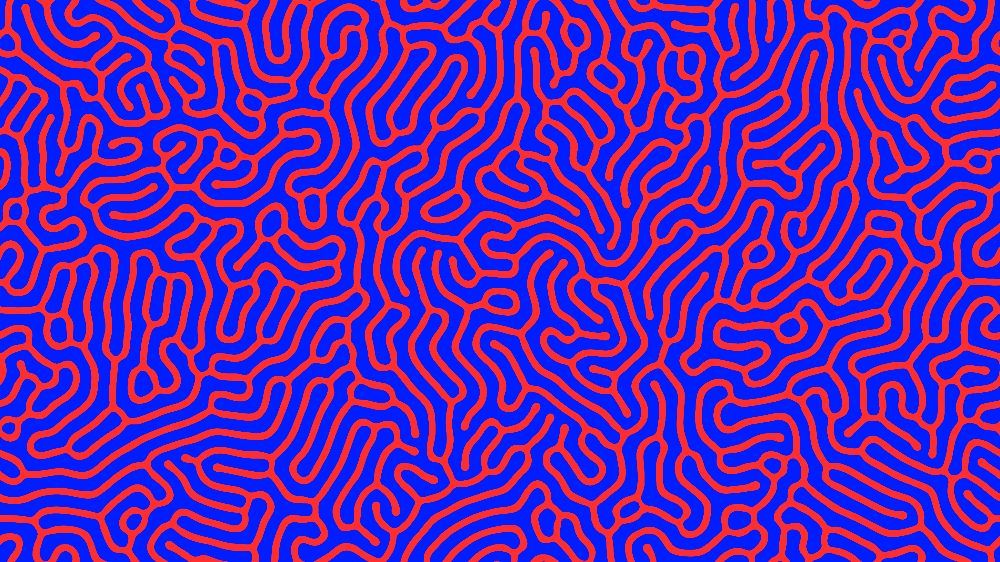
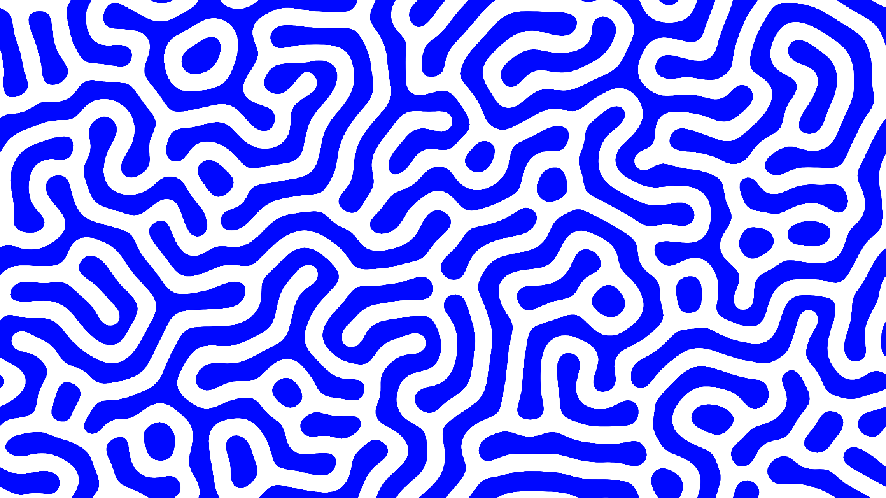
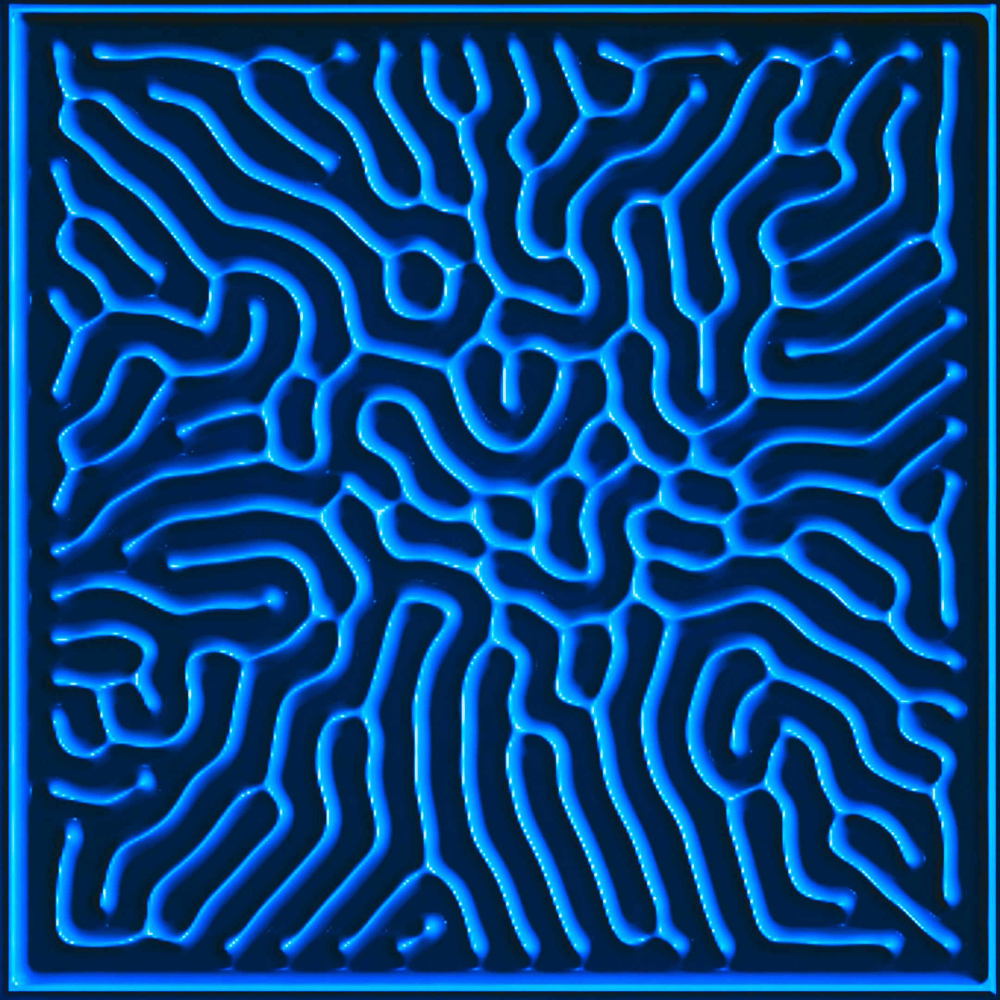
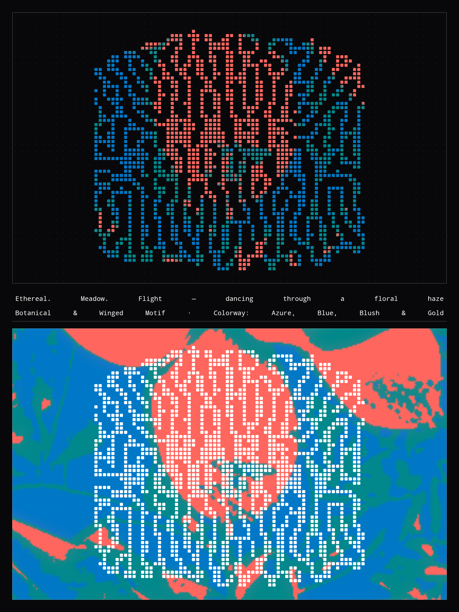
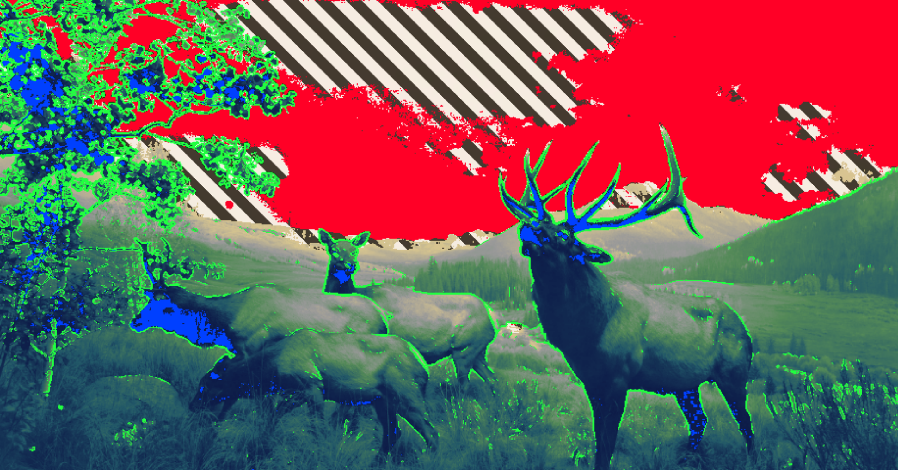
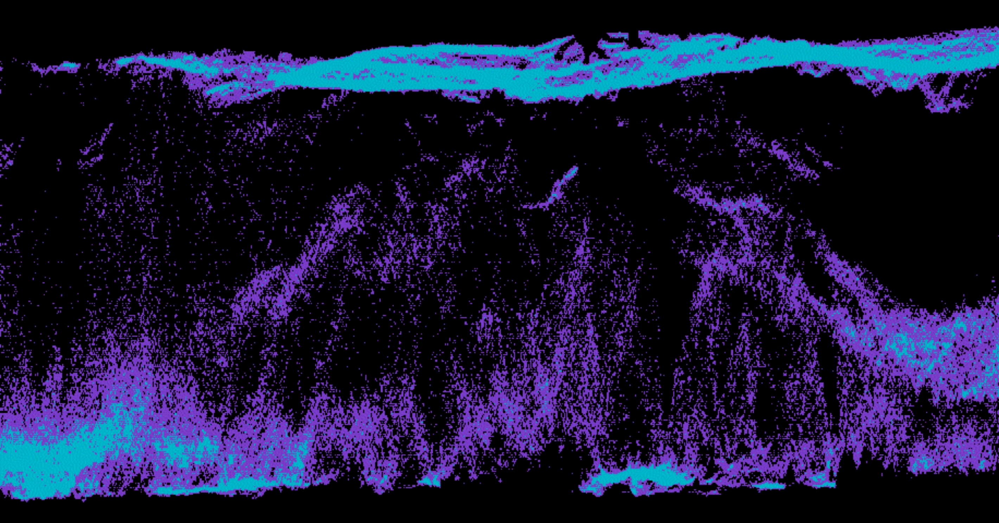
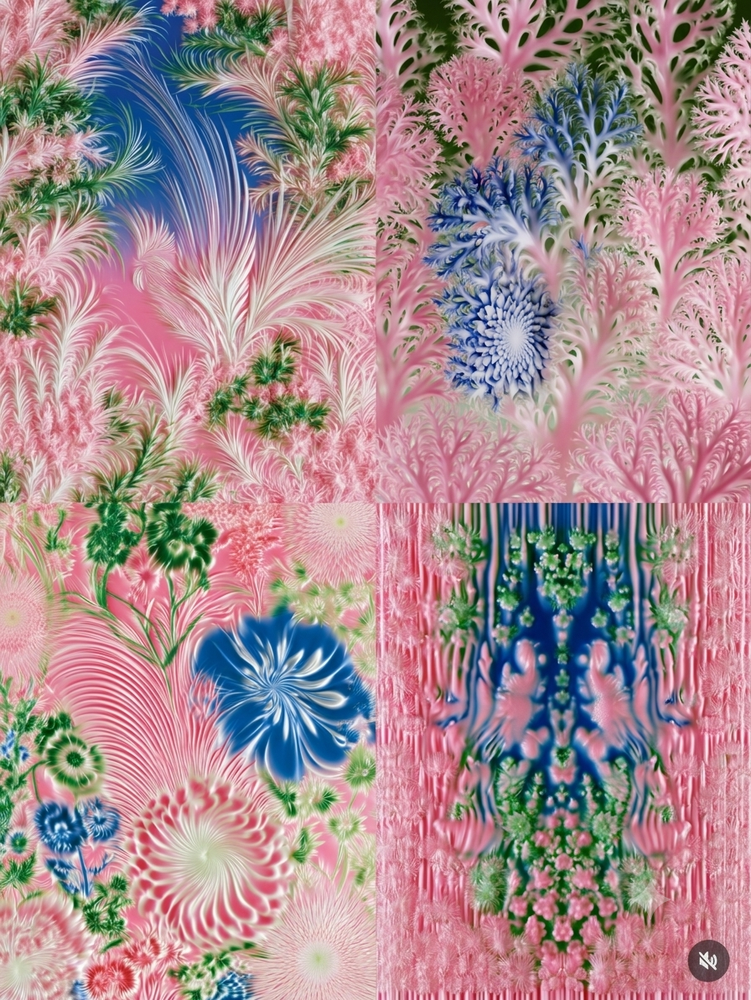
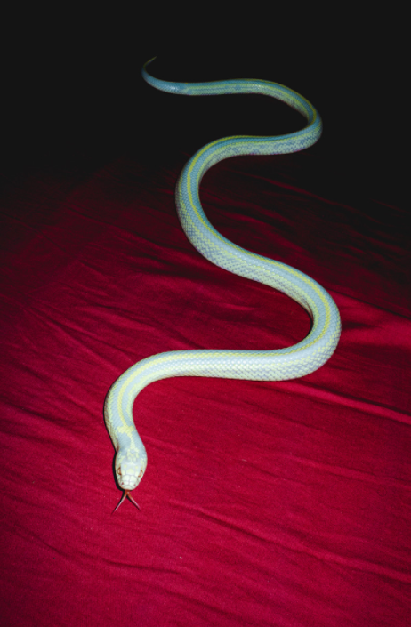

Two layers, and they are not interchangeable. Plates are photographic — full-bleed imagery, hero grounds, section breaks. Primitives are flat CSS, tileable at any size, and safe behind and around interface. Plates may carry the soft modelling their source has; primitives never do. Nothing in either layer fades to transparent.
01 · reference plates
Each plate names what it contributes that the system did not already have. Sampled hexes sit under each.

Reaction-diffusion. Two flat tones, organic path, zero gradient — the closest thing to a plate that obeys primitive law. The system's best full-bleed ground.

The same field inverted onto paper. The system's only sanctioned light ground — use for print, quiet documents, and inversion moments.

Glow-modelled. Plate-only: the bloom cannot be reproduced as a primitive and must not be faked with a shadow stack.

The reference that earns .t-dot-tri. Square pips on a dark ground, three inks, offset rows. Directly reproducible in CSS.

Posterised photograph with a hard diagonal stripe cut into the sky. Demonstrates the overlay move: stripe replaces a region, it does not sit translucently on top.

Two-ink error diffusion on black. Proves the night surface can hold a photograph without any midtone at all.

The one plate wholly outside the current palette: dusty blush, botanical green, chalk white. Soft-modelled, so plate-only.

Deep crimson with a pale cream subject and a black falloff. Supplies the dark red the ramp has never had.
02 · overlay law
An overlay takes over a region completely — the stripe owns the sky. Never a translucent sheet across the whole composition.
No transparent stop, no alpha ramp, no mask feather. Every edge is a hard stop or a dither boundary.
A plate or a primitive, not both, and not two primitives. The checkerboard accent strip is exempt — it is trim, not texture.
Texture stops where reading starts. Set copy on a flat panel over the plate, not on the plate.
Posterise to the smallest ink count that still reads. Three is the ceiling for primitives.
Recolour by re-exporting from the source tool, not by filtering — filters slide hues off the ramp.
03 · flat primitives
Hard-stop gradients only. Every one of these scales to any element without resampling and prints without banding.
repeating-linear-gradient(45deg,#0a0a0a 0 11px,#f2efe4 11px 22px)repeating-linear-gradient(-45deg,#ff0026 0 9px,#000 9px 18px)radial-gradient(circle,#0178c6 44%,transparent 45%) / 11pxtwo offset radial layers, coral + teal / 14pxrepeating-linear-gradient(#000 0 2px,#8a3fb0 2px 3px)45° hard-stop pair, offset half a cell / 20px1px rules, both axes / 18pxrepeating-linear-gradient(90deg, four hard stops)░░▒▒▓▓██▓▓▒▒░░ ▒░▒▓█▓▒░▒ ░▒▓█ ▓▒░ ██▓▓▒▒░░ ▒▓█▓▒ ░░▒▒▓▓ ▒▒▓▓██▓▓▒▒░░▒▒ ▓▒▓█▒░▓▒█ ▒▓█░ ▒░▓ ▓▓▒▒░░▒▒ ▓█▒▓░ ▒▒▓▓██ ▓▓██▓▓▒▒░░▒▒▓▓ █▓█▒░█▒▓░ ▓█▒░ ░▓▒ ▒▒░░▒▒▓▓ █░▓▒█ ▓▓██▓▓
The block ramp ░▒▓█ is the fifth primitive and the only one made of type. It sets progress meters, spinners and texture fills — see the ASCII card.
All eight ship in textures.css as .t-* classes driven by --t-a (mark) and --t-b (ground), and in JS as textureFill(kind, a, b, size). Named colourways — .t-knit, .t-oxblood, .t-blush, .t-electric, .t-paper, .t-bone — set the pairings the plates actually use. Components take them as a texture prop.
04 · the second set
Sampled from the plates and now in the token set as --blush, --oxblood, --botanical, --teal, --red-true, --electric. They are a second set, not an extension: the ten-stop rainbow is saturated and spectral and drives seeded hue — a node is never “oxblood”. These are for plates, editorial and full-bleed grounds. Ink is measured per hue, not assumed.
Cream #e8e3d0 did not join the family — it became the third surface instead. Black, night, cream. On cream the rainbow darkens until white ink clears 4.6:1 on every stop: night rotates the ramp sideways, cream pushes it down. See the Button card’s cream section for all ten.
the ramp on cream · white ink on all ten